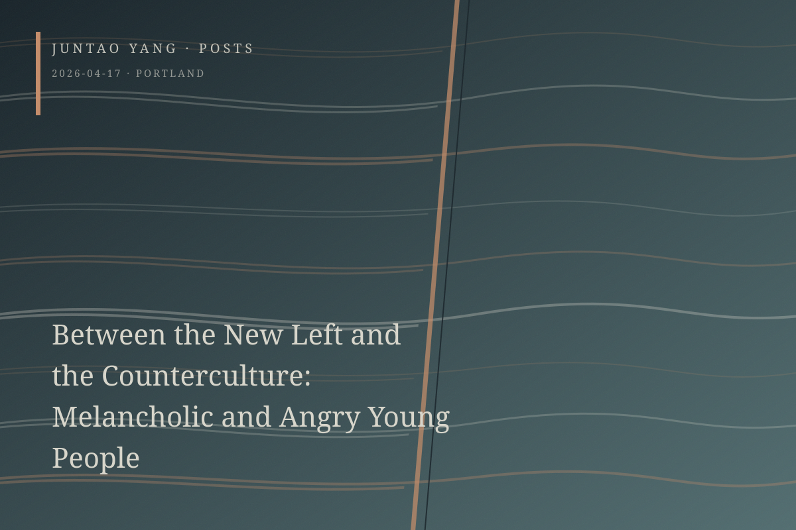

<content>
Downtown Portland now has only one McDonald’s left. The context of this loss is a steep rise in rents under gentrification, a worsening homelessness crisis, and the impasse of a progressive politics organized around tolerance.
The young people in the booths have dyed red or blue-green hair, lip rings, worn backpacks, and secondhand clothes found at Goodwill. At the next table, a bearded man in a knit cap shares an order of fries with the little dog sitting upright on a metal chair. Several students in printed hoodies sit by the window. On the other side, a man hunches over as saliva runs onto the table. Cheap and loose, idle yet faintly anxious.
The aesthetic style of these young people is an inheritance from the counterculture of the 1960s—or, according to another account, its commodification, since the aesthetics of rebellion are absorbed almost immediately and converted into a marketable identity. From what I observed, however, these aesthetic performances are sincere. They constitute a conscious semiotic guerrilla practice, much like that of working-class youth in postwar Britain. The decisive criterion is the relation anchoring signs to material conditions. The same dyed hair and lip ring mean entirely different things on a trust-fund kid and on a gig worker. For the latter, they are the visible marks of class position: a living counterculture.
This generation of self-described radical youth rejects Google and other privileged jobs sustained by injustice. They turn instead to gig work, share aging houses at the urban edge, eat cheap food irregularly, and occasionally forage for mushrooms and wild greens. Unexpectedly, most are children of the working class, with no property, family savings, or safety net. Their ethically chosen way of life therefore has another face: structural exclusion.
From the New Left of the 1960s—a social force distinct from but parallel to the counterculture—they have inherited a precise discursive power, exercised in the names of anticapitalism and opposition to the military-industrial complex. Their analyses are nearly impeccable. Their words and conduct align in refusing the promise of a bright future, although that refusal may also rationalize a social position that was already constrained. To acknowledge this does not impugn their sincerity. The irreducible tension of the refusal arises precisely where structural predicament meets subjective choice.
They have learned the analytic framework of the Left, but their mode of resistance comes from the counterculture. They can speak seriously about the reproduction of capital, name structural injustice, and identify ideological mechanisms. Yet their resistance assumes the form of a life-aesthetic rather than collective action directed at institutions.
This is a peculiar bridge between the New Left and the counterculture, a strange reconciliation and compromise between two traditions long held in tension.
Marcuse granted legitimacy to countercultural withdrawal on the grounds that individual exit disrupts the system by refusing to supply capital with labor and consumption. Half a century of experience has shown the assumption to be mistaken. Capitalism does not need your enthusiasm; it needs only your vulnerability. The gig economy demonstrates as much, and platform capitalism does so more thoroughly than conventional employment.
I do not know where these young people will be in twenty years. Countercultural withdrawal has not escaped capitalism. It has merely slipped into a corner with fewer protections.
</content>
April 17, 2026
Between the New Left and the Counterculture: Melancholic and Angry Young People
Portland’s precarious young radicals inherit the New Left’s analytic language and the counterculture’s aesthetic withdrawal, a compromise capitalism readily exploits.
